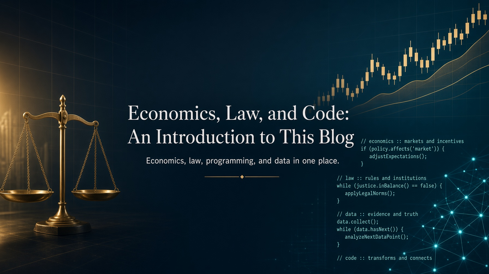

Published on September 9, 2026 at 6:42 PM by Pedro Nakashima

Welcome. This is the first post of a blog that will move between economics, law, and programming, and the first thing I owe anyone landing here is an honest account of what I plan to do with this space. My name is Pedro Nakashima. I live in Campo Grande, a city in Brazil’s Midwest region, roughly the size of a mid-sized American city, best known outside Brazil, if it is known at all, for sitting close to the Pantanal wetlands. The idea behind everything that follows is fairly simple: the most interesting questions I have run into over the past few years were almost never at the center of a single field. They lived at the border between two or three.
Before I get to the topics, I would rather talk about the method, because it is the method that defines the kind of reading you will find here. I am not attached to fixed ideas, and I feel no embarrassment about changing my mind, especially when I realize I was wrong. I would rather have a well-built argument than an old conviction, and a verifiable data point than an elegant one. That implies a practical commitment I will try to honor in every post: keeping a clear line between what is fact, what is evidence, what is my own analysis, and what is simply opinion. These are four different things, and a good share of public confusion about economics and law comes precisely from treating them as one.
I am an economist by training and hold a law degree, and that combination explains most of what interests me. I learned to program during my master’s degree in Economics at PUC-Rio, a university in Rio de Janeiro, when programming became a natural tool for working with data, models, and economic problems. Economics gave me the habit of asking how much, at what magnitude, and under which assumptions; programming gave me the ability to turn those questions into concrete analysis: pulling datasets, cleaning them, cross-referencing, calculating, modeling, testing; and law added the habit of asking on what legal basis, through which procedure, and with what consequences. Together, these fields taught me that a question does not have to end in a printout. It can end in evidence, in a number, in a clearly identified rule, or, just as valuably, in the realization that the available information does not yet allow for an answer.
Questions that live at the border
That is why I do not intend to fit this blog into a single niche. Here, economics will meet programming, law will meet data science, and public datasets will be used to investigate questions that started out as legal or economic. Language models and other artificial intelligence tools will show up in the role they actually play well, which is processing a volume of documents and text that no person could read in reasonable time. And programming will appear in the role I most enjoy giving it: turning theoretical analysis into an actual tool, one that runs, that breaks, that can be fixed, and that anyone else can run again.
My favorite programming language is Python, and it should show up often, in conceptual posts, in short examples, in experiments, in automation, in models, and in larger projects. Not because it is the best language for everything, which it is not, but because it is where I can get from a question to a result by the shortest path, and because the data-analysis ecosystem built around it is hard to beat. When code is part of the argument, it comes along with the text, not hidden behind a finished chart.
A meaningful part of what I plan to publish has to do with datasets, and that is an area usually treated as a technical detail when it is actually half the work. Finding out that a source exists, learning how to obtain it, organizing it, processing it, checking its consistency, and only then analyzing it: each of these steps decides the quality of the final answer. Brazil, in that respect, is more generous than people assume. The time series and open data from the Central Bank of Brazil, IBGE’s SIDRA platform (the national statistics agency’s data portal), the Chamber of Deputies’ open data (Brazil’s lower house of Congress), and LexML’s legislative archive support, on their own, an enormous number of concrete questions that almost nobody bothers to ask. I plan to show the whole path, including the tedious parts, because that is where the result is won or lost.
On the legal side, my interest centers on banking law, tax law, constitutional law, financial law, and the legislative process. I have a particular interest in forensic banking analysis, which is perhaps the clearest example of everything I described above happening at once: a legal dispute that can only be settled with financial mathematics, over documents that need to be read at scale, with an outcome that depends entirely on correctly reconstructing a sequence of calculations. It is not a topic that ends in opinion, and that is exactly why I like it.
What this space does not intend to be
Politics will show up here, and I would rather make that clear in the very first post, along with an equally clear caveat: I have never had, do not have, and do not intend to have any political or electoral ambitions. I enjoy the topic, and it interests me as an object of analysis, especially where it touches economics, institutions, public policy, and data. What I write should be predominantly technical and analytical, and my ambition, whenever I write about it, is for the piece to be useful even to someone who disagrees with my conclusion.
I also see no contradiction between being a Christian and valuing science deeply. I have never had to choose between the two, and I do not think valuing faith requires rejecting scientific knowledge or distrusting the method that produces it. I mention this not to turn the blog into a space for religious debate, but because it is part of who is writing, and I would rather readers know where I am coming from.
This blog is not, and will not present itself as, the work of someone who has mastered every subject it touches. There are topics where I have years of hands-on work and topics where I am simply a fairly stubborn student, and I will try to signal the difference whenever it matters. This space is meant both for publishing what I already know and for studying in public: testing a hypothesis, building an experiment, getting the first approach wrong, redoing it, and describing what I learned along the way. A piece that only shows the finished version is usually more comfortable to write and considerably less useful to read.
My goal is not to go viral or chase audience numbers. The purpose is to share work, projects, studies, analysis, and points of view, and if that finds the right readers, it will already have done what I hoped for. I also know that publishing on the internet means exposure, and that exposure eventually brings harsh criticism, disagreement, and some outright hostility. I consider that an inherent cost of putting ideas up for discussion, and it is a cost I accept. Criticism backed by argument, for that matter, is the good part of the deal: it is the cheapest mechanism there is for finding out you were wrong.
Not everything here will be technical. I enjoy music, film, and good television, and those subjects should show up now and then, without asking permission. And posts may come out in either Portuguese or English, because I want the content to reach people interested in these topics regardless of whether they are in Brazil or somewhere else.
That is it. Welcome to this space, which starts now and will probably change shape as I figure out what works. If any of the topics above sparked your curiosity, it is worth following the next posts: this first one only served to say where I am starting from and where I intend to go. The real work begins with the next one.
Topics: #Economics #Law #Python #DataScience #OpenData